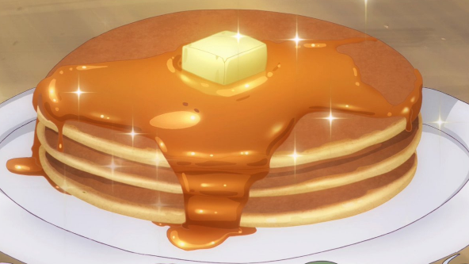

Here is the recipe for perfect american style pancakes
Recipe by: Joshua Weissman
Ingredients:
- 385g milk
- 1 egg
- 4g salt
- 1g baking soda
- 12g baking powder
- 21g melted butter
- Water
- Whipped cream
- Powdered sugar
- Butter
- Maple Syrup
Instructions:
- In a small bowl, whisk together egg and milk.
- In a separate bowl, whisk and combine all-purpose flour with granulated sugar, salt, baking soda, and baking powder.
- Mix the dry ingredients with the wet ingredients while constantly whisking.
- While whisking add in melted unsalted butter. Whisk until combined. Rest for 5 minutes.
- Preheat a nonstick skillet over medium. Spray with spray oil or unsalted butter.
- Once hot spoon 1/4 dollops of the pancake batter. Cook for 2-3 minutes or until golden brown on the bottom.
- Flip and cook for an additional 2-3 minutes. Repeat with the rest of the batter.
- Top with butter and drizzle with maple syrup to serve.
Go back to the main page